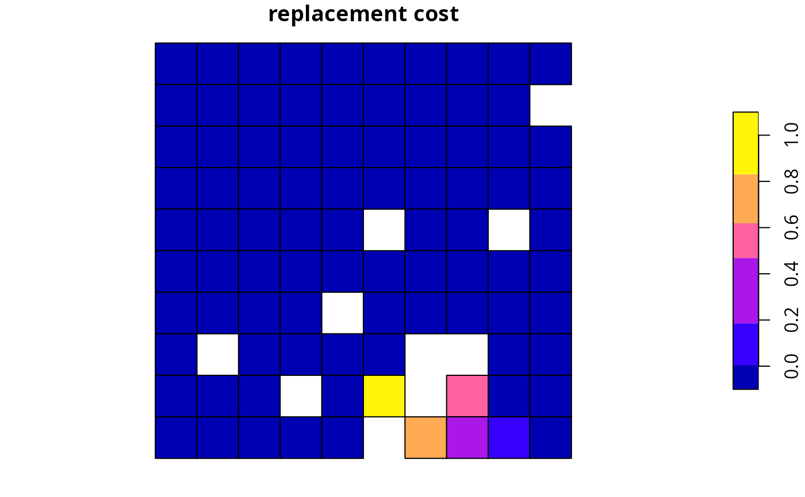
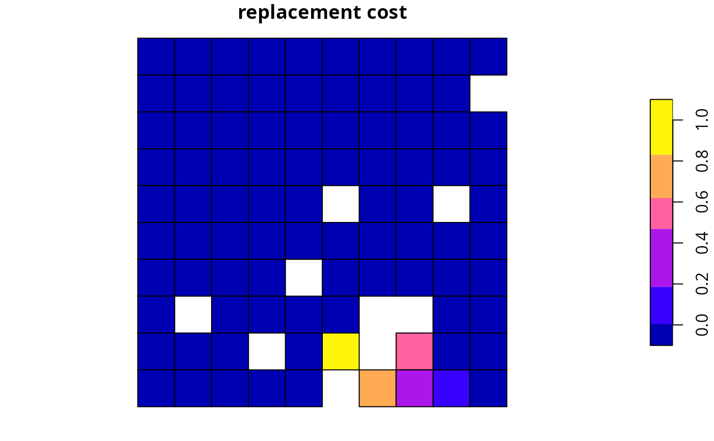

Evaluate solution importance using replacement cost scores
Source:R/eval_replacement_importance.R
eval_replacement_importance.RdCalculate importance scores for planning units selected in a solution based on the replacement cost method (Cabeza and Moilanen 2006).
eval_replacement_importance(x, solution, ...)
# S4 method for ConservationProblem,numeric
eval_replacement_importance(x, solution, rescale, run_checks, force, threads, ...)
# S4 method for ConservationProblem,matrix
eval_replacement_importance(x, solution, rescale, run_checks, force, threads, ...)
# S4 method for ConservationProblem,data.frame
eval_replacement_importance(x, solution, rescale, run_checks, force, threads, ...)
# S4 method for ConservationProblem,Spatial
eval_replacement_importance(x, solution, rescale, run_checks, force, threads, ...)
# S4 method for ConservationProblem,sf
eval_replacement_importance(x, solution, rescale, run_checks, force, threads, ...)
# S4 method for ConservationProblem,Raster
eval_replacement_importance(x, solution, rescale, run_checks, force, threads, ...)Arguments
- x
problem()(i.e.,ConservationProblem) object.- solution
numeric,matrix,data.frame,Raster,Spatial, orsf::sf()object. The argument should be in the same format as the planning unit cost data in the argument tox. See the Solution format section for more information.- ...
not used.
- rescale
logicalflag indicating if replacement cost values---excepting infinite (Inf) and zero values---should be rescaled to range between 0.01 and 1. Defaults toTRUE.- run_checks
logicalflag indicating whether presolve checks should be run prior solving the problem. These checks are performed using thepresolve_check()function. Defaults toTRUE. Skipping these checks may reduce run time for large problems.- force
logicalflag indicating if an attempt to should be made to solve the problem even if potential issues were detected during the presolve checks. Defaults toFALSE.- threads
integernumber of threads to use for the optimization algorithm. Defaults to 1 such that only a single thread is used.
Value
A numeric, matrix, data.frameRasterLayer, Spatial,
or sf::sf() object containing the importance scores for each planning
unit in the solution. Specifically, the returned object is in the
same format as the planning unit data in the argument to x.
Details
This function implements a modified version of the
replacement cost method (Cabeza and Moilanen 2006).
Specifically, the score for each planning unit is calculated
as the difference in the objective value of a solution when each planning
unit is locked out and the optimization processes rerun with all other
selected planning units locked in. In other words, the replacement cost
metric corresponds to change in solution quality incurred if a given
planning unit cannot be acquired when implementing the solution and the
next best planning unit (or set of planning units) will need to be
considered instead. Thus planning units with a higher score are more
important (and irreplaceable).
For example, when using the minimum set objective function
(add_min_set_objective()), the replacement cost scores
correspond to the additional costs needed to meet targets when each
planning unit is locked out. When using the maximum utility
objective function (add_max_utility_objective(), the
replacement cost scores correspond to the reduction in the utility when
each planning unit is locked out. Infinite values mean that no feasible
solution exists when planning units are locked out---they are
absolutely essential for obtaining a solution (e.g., they contain rare
species that are not found in any other planning units or were locked in).
Zeros values mean that planning units can swapped with other planning units
and this will have no effect on the performance of the solution at all
(e.g., because they were only selected due to spatial fragmentation
penalties).
These calculations can take a long time to complete for large
or complex conservation planning problems. As such, we using this
method for small or moderate-sized conservation planning problems
(e.g., < 30,000 planning units). To reduce run time, we
recommend calculating these scores without additional penalties (e.g.,
add_boundary_penalties()) or spatial constraints (e.g.,
add_contiguity_constraints()). To further reduce run time,
we recommend using proportion-type decisions when calculating the scores
(see below for an example).
Solution format
Broadly speaking, the argument to solution must be in the same format as
the planning unit data in the argument to x.
Further details on the correct format are listed separately
for each of the different planning unit data formats:
xhasnumericplanning unitsThe argument to
solutionmust be anumericvector with each element corresponding to a different planning unit. It should have the same number of planning units as those in the argument tox. Additionally, any planning units missing cost (NA) values should also have missing (NA) values in the argument tosolution.xhasmatrixplanning unitsThe argument to
solutionmust be amatrixvector with each row corresponding to a different planning unit, and each column correspond to a different management zone. It should have the same number of planning units and zones as those in the argument tox. Additionally, any planning units missing cost (NA) values for a particular zone should also have a missing (NA) values in the argument tosolution.xhasRasterplanning unitsThe argument to
solutionbe aRasterobject where different grid cells (pixels) correspond to different planning units and layers correspond to a different management zones. It should have the same dimensionality (rows, columns, layers), resolution, extent, and coordinate reference system as the planning units in the argument tox. Additionally, any planning units missing cost (NA) values for a particular zone should also have missing (NA) values in the argument tosolution.xhasdata.frameplanning unitsThe argument to
solutionmust be adata.framewith each column corresponding to a different zone, each row corresponding to a different planning unit, and cell values corresponding to the solution value. This means that if adata.frameobject containing the solution also contains additional columns, then these columns will need to be subsetted prior to using this function (see below for example withsf::sf()data). Additionally, any planning units missing cost (NA) values for a particular zone should also have missing (NA) values in the argument tosolution.xhasSpatialplanning unitsThe argument to
solutionmust be aSpatialobject with each column corresponding to a different zone, each row corresponding to a different planning unit, and cell values corresponding to the solution value. This means that if theSpatialobject containing the solution also contains additional columns, then these columns will need to be subsetted prior to using this function (see below for example withsf::sf()data). Additionally, the argument tosolutionmust also have the same coordinate reference system as the planning unit data. Furthermore, any planning units missing cost (NA) values for a particular zone should also have missing (NA) values in the argument tosolution.xhassf::sf()planning unitsThe argument to
solutionmust be asf::sf()object with each column corresponding to a different zone, each row corresponding to a different planning unit, and cell values corresponding to the solution value. This means that if thesf::sf()object containing the solution also contains additional columns, then these columns will need to be subsetted prior to using this function (see below for example). Additionally, the argument tosolutionmust also have the same coordinate reference system as the planning unit data. Furthermore, any planning units missing cost (NA) values for a particular zone should also have missing (NA) values in the argument tosolution.
References
Cabeza M and Moilanen A (2006) Replacement cost: A practical measure of site value for cost-effective reserve planning. Biological Conservation, 132: 336--342.
See also
See importance for an overview of all functions for evaluating the importance of planning units selected in a solution.
Other importances:
eval_ferrier_importance(),
eval_rare_richness_importance()
Examples
# \dontrun{
# seed seed for reproducibility
set.seed(600)
# load data
data(sim_pu_raster, sim_features, sim_pu_zones_stack, sim_features_zones)
# create minimal problem with binary decisions
p1 <- problem(sim_pu_raster, sim_features) %>%
add_min_set_objective() %>%
add_relative_targets(0.1) %>%
add_binary_decisions() %>%
add_default_solver(gap = 0, verbose = FALSE)
# solve problem
s1 <- solve(p1)
# print solution
print(s1)
#> class : RasterLayer
#> dimensions : 10, 10, 100 (nrow, ncol, ncell)
#> resolution : 0.1, 0.1 (x, y)
#> extent : 0, 1, 0, 1 (xmin, xmax, ymin, ymax)
#> crs : NA
#> source : memory
#> names : layer
#> values : 0, 1 (min, max)
#>
# plot solution
plot(s1, main = "solution", axes = FALSE, box = FALSE)
# calculate importance scores
rc1 <- eval_replacement_importance(p1, s1)
# print importance scores
print(rc1)
#> class : RasterLayer
#> dimensions : 10, 10, 100 (nrow, ncol, ncell)
#> resolution : 0.1, 0.1 (x, y)
#> extent : 0, 1, 0, 1 (xmin, xmax, ymin, ymax)
#> crs : NA
#> source : memory
#> names : rc
#> values : 0, 1 (min, max)
#>
# plot importance scores
plot(rc1, main = "replacement cost", axes = FALSE, box = FALSE)
 # since replacement cost scores can take a long time to calculate with
# binary decisions, we can calculate them using proportion-type
# decision variables. Note we are still calculating the scores for our
# previous solution (s1), we are just using a different optimization
# problem when calculating the scores.
p2 <- problem(sim_pu_raster, sim_features) %>%
add_min_set_objective() %>%
add_relative_targets(0.1) %>%
add_proportion_decisions() %>%
add_default_solver(gap = 0, verbose = FALSE)
# calculate importance scores using proportion type decisions
rc2 <- eval_replacement_importance(p2, s1)
# print importance scores based on proportion type decisions
print(rc2)
#> class : RasterLayer
#> dimensions : 10, 10, 100 (nrow, ncol, ncell)
#> resolution : 0.1, 0.1 (x, y)
#> extent : 0, 1, 0, 1 (xmin, xmax, ymin, ymax)
#> crs : NA
#> source : memory
#> names : rc
#> values : 0, 1 (min, max)
#>
# plot importance scores based on proportion type decisions
# we can see that the importance values in rc1 and rc2 are similar,
# and this confirms that the proportion type decisions are a good
# approximation
plot(rc2, main = "replacement cost", axes = FALSE, box = FALSE)
# since replacement cost scores can take a long time to calculate with
# binary decisions, we can calculate them using proportion-type
# decision variables. Note we are still calculating the scores for our
# previous solution (s1), we are just using a different optimization
# problem when calculating the scores.
p2 <- problem(sim_pu_raster, sim_features) %>%
add_min_set_objective() %>%
add_relative_targets(0.1) %>%
add_proportion_decisions() %>%
add_default_solver(gap = 0, verbose = FALSE)
# calculate importance scores using proportion type decisions
rc2 <- eval_replacement_importance(p2, s1)
# print importance scores based on proportion type decisions
print(rc2)
#> class : RasterLayer
#> dimensions : 10, 10, 100 (nrow, ncol, ncell)
#> resolution : 0.1, 0.1 (x, y)
#> extent : 0, 1, 0, 1 (xmin, xmax, ymin, ymax)
#> crs : NA
#> source : memory
#> names : rc
#> values : 0, 1 (min, max)
#>
# plot importance scores based on proportion type decisions
# we can see that the importance values in rc1 and rc2 are similar,
# and this confirms that the proportion type decisions are a good
# approximation
plot(rc2, main = "replacement cost", axes = FALSE, box = FALSE)
 # create minimal problem with polygon (sf) planning units
p3 <- problem(sim_pu_sf, sim_features, cost_column = "cost") %>%
add_min_set_objective() %>%
add_relative_targets(0.05) %>%
add_binary_decisions() %>%
add_default_solver(gap = 0, verbose = FALSE)
# solve problem
s3 <- solve(p3)
# print solution
print(s3)
#> Simple feature collection with 90 features and 4 fields
#> Geometry type: POLYGON
#> Dimension: XY
#> Bounding box: xmin: 0 ymin: 0 xmax: 1 ymax: 1
#> CRS: NA
#> First 10 features:
#> cost locked_in locked_out solution_1 geometry
#> 1 215.8638 FALSE FALSE 0 POLYGON ((0 1, 0.1 1, 0.1 0...
#> 2 212.7823 FALSE FALSE 0 POLYGON ((0.1 1, 0.2 1, 0.2...
#> 3 207.4962 FALSE FALSE 0 POLYGON ((0.2 1, 0.3 1, 0.3...
#> 4 208.9322 FALSE TRUE 0 POLYGON ((0.3 1, 0.4 1, 0.4...
#> 5 214.0419 FALSE FALSE 0 POLYGON ((0.4 1, 0.5 1, 0.5...
#> 6 213.7636 FALSE FALSE 0 POLYGON ((0.5 1, 0.6 1, 0.6...
#> 7 210.4612 FALSE FALSE 0 POLYGON ((0.6 1, 0.7 1, 0.7...
#> 8 211.0424 FALSE TRUE 0 POLYGON ((0.7 1, 0.8 1, 0.8...
#> 9 210.3878 FALSE FALSE 0 POLYGON ((0.8 1, 0.9 1, 0.9...
#> 10 204.3971 FALSE FALSE 0 POLYGON ((0.9 1, 1 1, 1 0.9...
# plot solution
plot(s3[, "solution_1"], main = "solution")
# create minimal problem with polygon (sf) planning units
p3 <- problem(sim_pu_sf, sim_features, cost_column = "cost") %>%
add_min_set_objective() %>%
add_relative_targets(0.05) %>%
add_binary_decisions() %>%
add_default_solver(gap = 0, verbose = FALSE)
# solve problem
s3 <- solve(p3)
# print solution
print(s3)
#> Simple feature collection with 90 features and 4 fields
#> Geometry type: POLYGON
#> Dimension: XY
#> Bounding box: xmin: 0 ymin: 0 xmax: 1 ymax: 1
#> CRS: NA
#> First 10 features:
#> cost locked_in locked_out solution_1 geometry
#> 1 215.8638 FALSE FALSE 0 POLYGON ((0 1, 0.1 1, 0.1 0...
#> 2 212.7823 FALSE FALSE 0 POLYGON ((0.1 1, 0.2 1, 0.2...
#> 3 207.4962 FALSE FALSE 0 POLYGON ((0.2 1, 0.3 1, 0.3...
#> 4 208.9322 FALSE TRUE 0 POLYGON ((0.3 1, 0.4 1, 0.4...
#> 5 214.0419 FALSE FALSE 0 POLYGON ((0.4 1, 0.5 1, 0.5...
#> 6 213.7636 FALSE FALSE 0 POLYGON ((0.5 1, 0.6 1, 0.6...
#> 7 210.4612 FALSE FALSE 0 POLYGON ((0.6 1, 0.7 1, 0.7...
#> 8 211.0424 FALSE TRUE 0 POLYGON ((0.7 1, 0.8 1, 0.8...
#> 9 210.3878 FALSE FALSE 0 POLYGON ((0.8 1, 0.9 1, 0.9...
#> 10 204.3971 FALSE FALSE 0 POLYGON ((0.9 1, 1 1, 1 0.9...
# plot solution
plot(s3[, "solution_1"], main = "solution")
 # calculate importance scores
rc3 <- eval_rare_richness_importance(p3, s3[, "solution_1"])
# plot importance scores
plot(rc3, main = "replacement cost")

# build multi-zone conservation problem with raster data
p4 <- problem(sim_pu_zones_stack, sim_features_zones) %>%
add_min_set_objective() %>%
add_relative_targets(matrix(runif(15, 0.1, 0.2), nrow = 5,
ncol = 3)) %>%
add_binary_decisions() %>%
add_default_solver(gap = 0, verbose = FALSE)
# solve the problem
s4 <- solve(p4)
# print solution
print(s4)
#> class : RasterStack
#> dimensions : 10, 10, 100, 3 (nrow, ncol, ncell, nlayers)
#> resolution : 0.1, 0.1 (x, y)
#> extent : 0, 1, 0, 1 (xmin, xmax, ymin, ymax)
#> crs : NA
#> names : zone_1, zone_2, zone_3
#> min values : 0, 0, 0
#> max values : 1, 1, 1
#>
# plot solution
# each panel corresponds to a different zone, and data show the
# status of each planning unit in a given zone
plot(s4, main = paste0("zone ", seq_len(nlayers(s4))), axes = FALSE,
box = FALSE)
# calculate importance scores
rc3 <- eval_rare_richness_importance(p3, s3[, "solution_1"])
# plot importance scores
plot(rc3, main = "replacement cost")

# build multi-zone conservation problem with raster data
p4 <- problem(sim_pu_zones_stack, sim_features_zones) %>%
add_min_set_objective() %>%
add_relative_targets(matrix(runif(15, 0.1, 0.2), nrow = 5,
ncol = 3)) %>%
add_binary_decisions() %>%
add_default_solver(gap = 0, verbose = FALSE)
# solve the problem
s4 <- solve(p4)
# print solution
print(s4)
#> class : RasterStack
#> dimensions : 10, 10, 100, 3 (nrow, ncol, ncell, nlayers)
#> resolution : 0.1, 0.1 (x, y)
#> extent : 0, 1, 0, 1 (xmin, xmax, ymin, ymax)
#> crs : NA
#> names : zone_1, zone_2, zone_3
#> min values : 0, 0, 0
#> max values : 1, 1, 1
#>
# plot solution
# each panel corresponds to a different zone, and data show the
# status of each planning unit in a given zone
plot(s4, main = paste0("zone ", seq_len(nlayers(s4))), axes = FALSE,
box = FALSE)
 # calculate importance scores
rc4 <- eval_replacement_importance(p4, s4)
# plot importance
# each panel corresponds to a different zone, and data show the
# importance of each planning unit in a given zone
plot(rc4, main = paste0("zone ", seq_len(nlayers(s4))), axes = FALSE,
box = FALSE)
# calculate importance scores
rc4 <- eval_replacement_importance(p4, s4)
# plot importance
# each panel corresponds to a different zone, and data show the
# importance of each planning unit in a given zone
plot(rc4, main = paste0("zone ", seq_len(nlayers(s4))), axes = FALSE,
box = FALSE)
 # }
# }